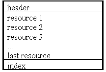

|
| |
Resource files contain data in numbered resources. The index can be used to efficiently find a resource given its numeric id. There can be from 1 to 4095 resources in a resource file. A resource file has the following format:

There are four main reasons for using resource files:
resource files make it easier for applications to run in more than one language. The resource text may be changed and the resources recompiled, without altering or recompiling the C++ program.
they are convenient for specifying and modifying some aspects of application layout and design. Applications that use the Uikon framework must have a resource file.
keeping data in a separate resource file may reduce RAM requirements because text strings will only be loaded into RAM when needed
resource files may be compressed, thereby reducing program size
Resource files are produced by compiling a text source file,
extension rss, using the EPOC resource compiler,
rcomp. rcomp is not however usually invoked
directly:
For C++ programmer's, invocation of the resource compiler is
performed automatically as part of the build process by abld or by
the Microsoft Visual C++ IDE. An alternative is to use the command-line tool
epocrc: see Resource compiler with preprocessing epocrc.bat.
|
Resource compilation is a two-stage process:
the pre-processor stage
the main resource compilation stage
The pre-processing stage operates on the resource file statements
and uses the cpp pre-processor supplied with the GNU C++ compiler.
The GCC compiler is located in the directory \epoc32\gcc\bin, as
downloaded from the SDK. If you also have a cpp from a different
vendor on your system, make sure that the directory in which it resides
follows
\epoc32\gcc\bin in the path.
The main resource compilation stage generates:
the header file, conventionally given the extension
rsg
the compiled resource file, extension rsc
The header file contains #define statements give a
symbolic name for the index into the resource file, so that your source code
can be independent of the number and order of resources within the file. For a
named resource such as:
RESOURCE TBUF r_eik_bafl_error_offset { buf="Wrong format resource file"; }
the generated header file will have a #define such
as:
#define R_EIK_BAFL_ERROR_OFFSET 0xf3b045
where the number is a resource ID which encodes the resource index,
and is suitable for passing to the C++ function
RResourceFile::AllocReadLC().
In the course of project development, changes to the resource file
may not always result in changes to the set of #define statements
generated. If there is no change, the rsg file is not rebuilt,
thereby avoiding unnecessary re-compilation and linking.
The compiled resource file contains the resource data, and is the file that is referred to at run-time by the application.
Copyright ©2002 Symbian Ltd. 6.1-00174 |
|